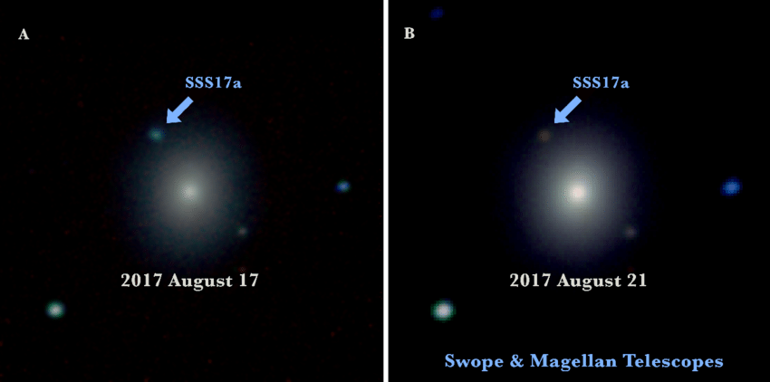
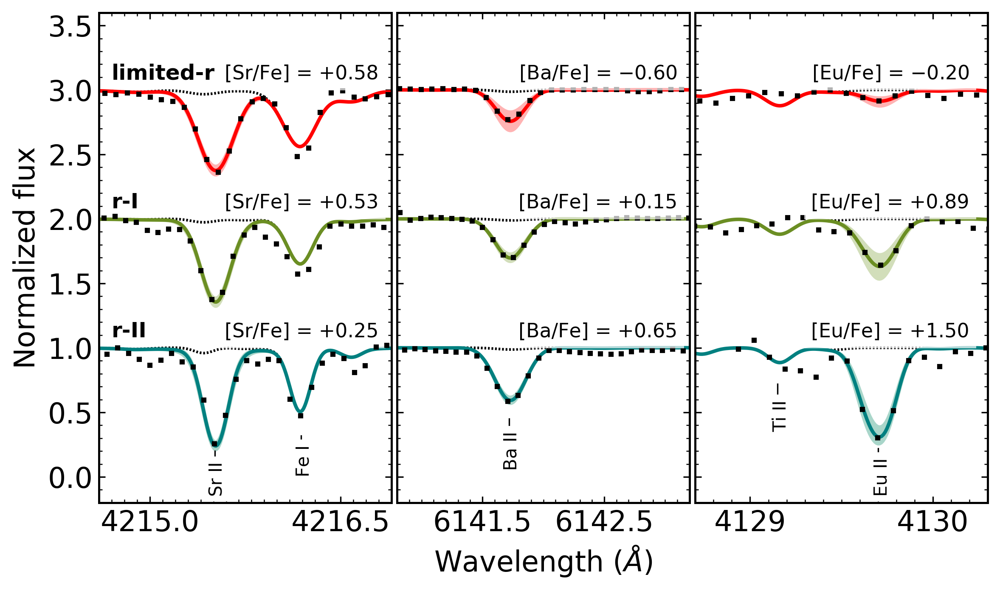
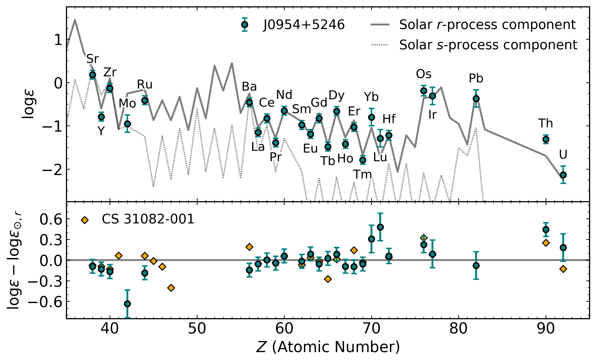
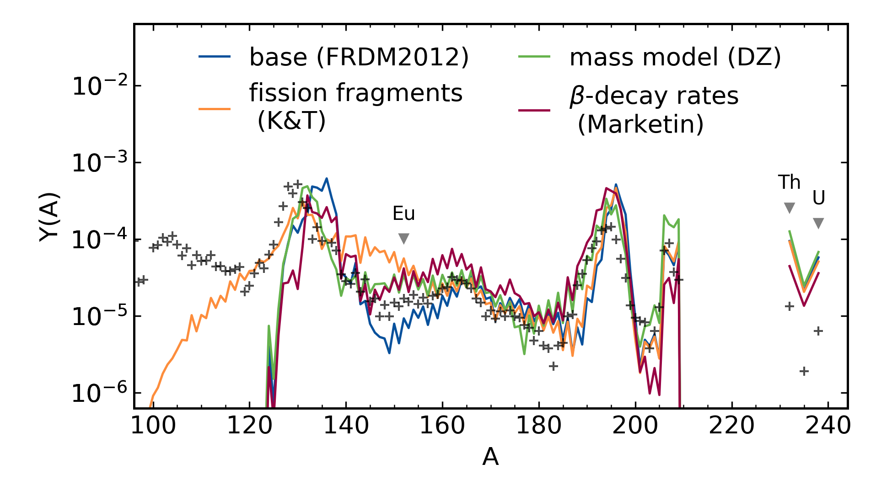
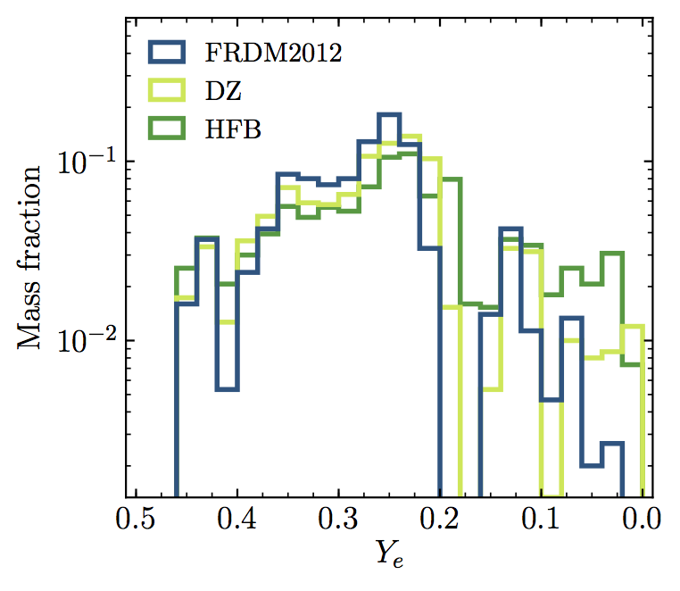
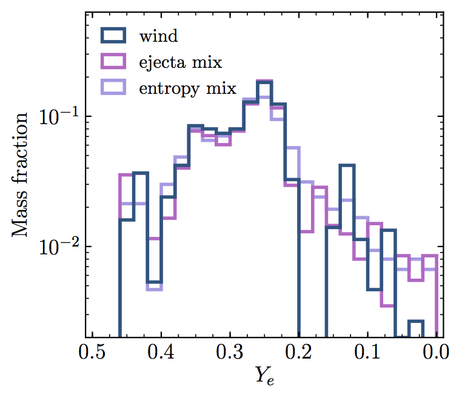
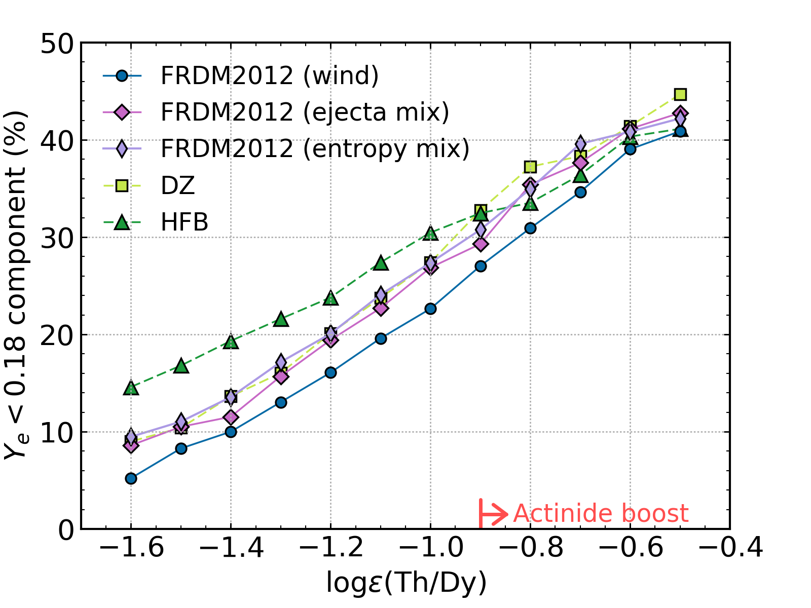

Constraining the r-Process with
Actinide Production Studies
Erika M. Holmbeck
2 December 2019
eholmbeck.github.io/talks.html
The Origin of the Elements

from data in Sneden+ (2008)
The r-process
The (Solar) r-Process Pattern

Hotokezaka+ (2018)
What is the site of the r-Process?
Core-collapse supernovae?
Exotic supernovae?
Neutron Star Mergers

Daniel Price (U/Exeter) and Stephan Rosswog (Int. U/Bremen)
Neutron Star Mergers: GW170817

Drout+ (2017)
How (else) can we study the r-process observationally?
Chemically-enhanced stars
r-II Stars

McWilliam+ (1995), Sneden+ (2003)
Universality of the r -Process
r-Process Enhanced Stars are Rare

from data in Abohalima & Frebel (2018)
Snapshot high-resolution data obtained for 1767 (of target 2500) stars
Published 225 (325 in prep.)
Identified over 25 new r-II stars (of ~600 analyzed)

Magellan Telescopes, Las Campanas Observatory, Chile
Solar [Fe/H] = 0


Metal-poor [Fe/H] < -3
High-Resolution Spectroscopy
Hansen, Holmbeck+ (2018)
Doubled Number of Known r-II Stars
from RPA data (2017-2019)
Actinides in r-II Stars
Thorium in J2038-0023 and Uranium in J0954+5246


Placco, Holmbeck+ (2017), Holmbeck+ (2018)
Thorium in Metal-Poor Stars
The actinide-to-lanthanide ratio (Th/Eu) is not the same in all r-process enhanced stars

Holmbeck+ (2018)
The Actinide Boost

Holmbeck+ (2018)
What is the source of this actinide-boost?
Nuclear or Astrophysical?
Neutron Star Merger Ejecta
Metzger & Fernandez (2014)
Neutron Star Merger Ejecta

Metzger & Fernandez (2014)
T. Sprouse and M. Mumpower
Low-entropy dynamical (tidal) ejecta of a NSM
(Korobkin+ 2012; Rosswog+ 2013)
Vary the initial electron fraction: Ye=0.005 - 0.250
Ye = [1+(n/p)]-1
Ye = 0: all neutrons
Ye = 1: all protons
Actinide Production and Ye
The electron fraction (Ye) is a key parameter determining the extent of an r-process event
Fission Cycling
Only a narrow Ye range reproduces observations of Th and U

Holmbeck+ (2019a)
Fission Cycling
Only a narrow Ye range reproduces observations of Th and U

Holmbeck+ (2019a)
Nuclear Variations
Baseline: FRDM2012 mass model
with Möller beta-decay
rates and 50/50 fission fragment distribution
Holmbeck+ (2019a)
Fission Fragment Distribution?
Fission products of 238U compared to Kodama & Takahashi (1975) description (K&T)
from data in Nagy+ (1978)
Fission Fragment Distribution?
Using the K&T case over-produces Eu
Holmbeck+ (2019a)
Beta-Decay Rates?
β-decay rates from Marketin+ (2016) are over 10x faster at N>126

Beta-Decay Rates?
Using the Marketin produces the wrong U/Th ratio
Holmbeck+ (2019a)
Nuclear Mass Model?
The Duflo & Zuker (1995) mass model (DZ) has weaker shell closures
Nuclear Mass Model?
The DZ case still over-produces the actinides
Holmbeck+ (2019a)
In fission cycling conditions, no single choice of nuclear data reproduces the actinide-boost
from data in Holmbeck+ (2019)
Astrophysical Mixture?
If nuclear physics can't explain the actinide-boost, perhaps astrophysics can
Metzger & Fernandez (2014)
Astrophysical Mixture?
Astrophysical Mixture!
Abundances of stars enhanced with Th and U can be reproduced by a combination of Ye

Astrophysical Mixture!...?
What would the abundances themselves suggest for this ejecta distribution?

Actinide Differences
Patterns of
Actinide Differences
Do these actinide variations point to different r-process sites/characteristics?

Holmbeck+ (2019b)
Actinide-Dilution with Matching Model
Builds empirical mass ejecta distributions as a function of Ye (0.005-0.450)
To explain entire pattern using Zr, Dy, and Th only
Empirical ejecta mass distributions
Distributions differ in very low-Ye region

Holmbeck+ (2019b)
Nuclear Physics Variations
Holmbeck+ (2019b)
Astrophysical Variations
Holmbeck+ (2019b)
The low-Ye component
No discrete difference between actinide-rich and actinide-poor

Holmbeck+ (2019b)

Holmbeck+ (2019b)
Actinide-boost stars do not necessarily call
for a separate r-process progenitor
Is this source an NSM?
GW170817 lightcurve
Lanthanide-poor blue ejecta + Lanthanide-rich red ejecta

Cowperthwaite+ (2017)
Two ejecta components
Stellar Abundances
Xlan = 10-3.8
Xlan = 10-0.8
mred / mblue = 1.7
Holmbeck+ (2019b)

GW170817
Xlan = 10-4
Xlan = 10-1.5
mred / mblue = 1.6
Kasen+ (2017)
Results derived from r-enhanced stars are
consistent with the GW170817 kilonova
Further evidence supporting that an NSM produced
the material in r-enhanced stars?
Special Thanks
Rebecca Surman (ND), Gail C. McLaughlin (NC State), Anna Frebel (MIT)
Trevor M. Sprouse (ND), Matthew Mumpower (LANL)
Timothy C. Beers (ND), Nicole Vassh (ND), Terese T. Hansen (TAMU), Chris Sneden (UT-Austin)
Vinicius M. Placco (ND), Ian U. Roederer (UMich.), Charli M. Sakari (UW), Rana Ezzeddine (MIT)
Grant Mathews (ND), Ani Aprahamian (ND), Toshihiko Kawano (LANL)